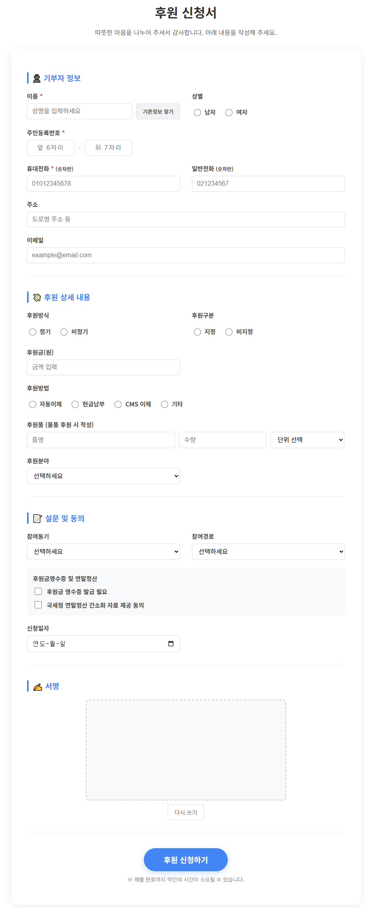

단순한 설문지를 넘어, 디지털 서명과 복합 입력이 가능한 스마트 후원 신청 도구입니다. 구글 스프레드시트와 실시간 연동되어 별도의 DB 없이도 체계적인 후원자 관리가 가능합니다.
✍️
디지털 서명 기능
마우스나 터치펜으로 직접 서명을 받아 이미지로 저장할 수 있습니다.
📊
실시간 시트 연동
입력이 완료되는 즉시 구글 스프레드시트의 행으로 추가됩니다.
📐
완벽한 커스터마이징
HTML 문법을 통해 기관의 로고 및 필요 항목을 자유롭게 배치 가능합니다.

도구 실행 화면 예시